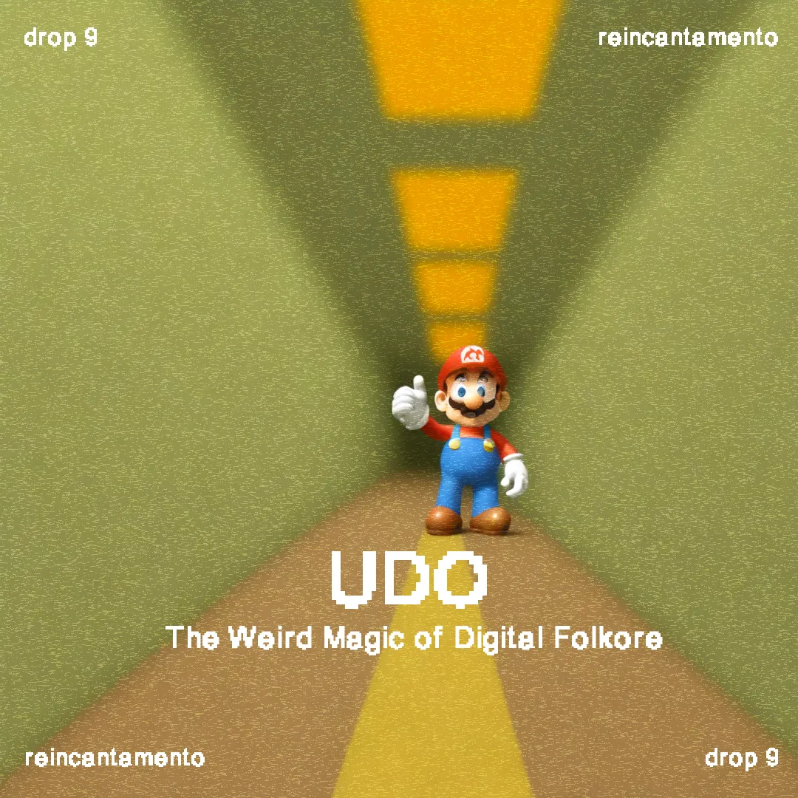
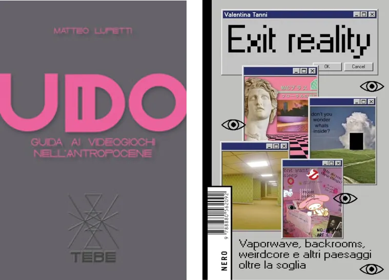
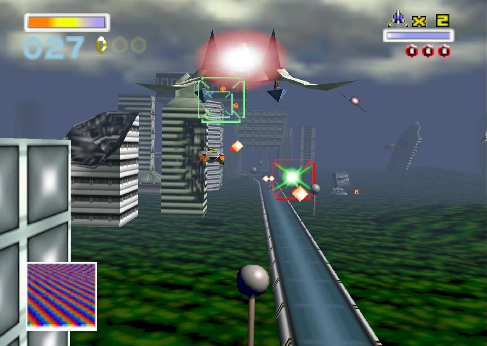
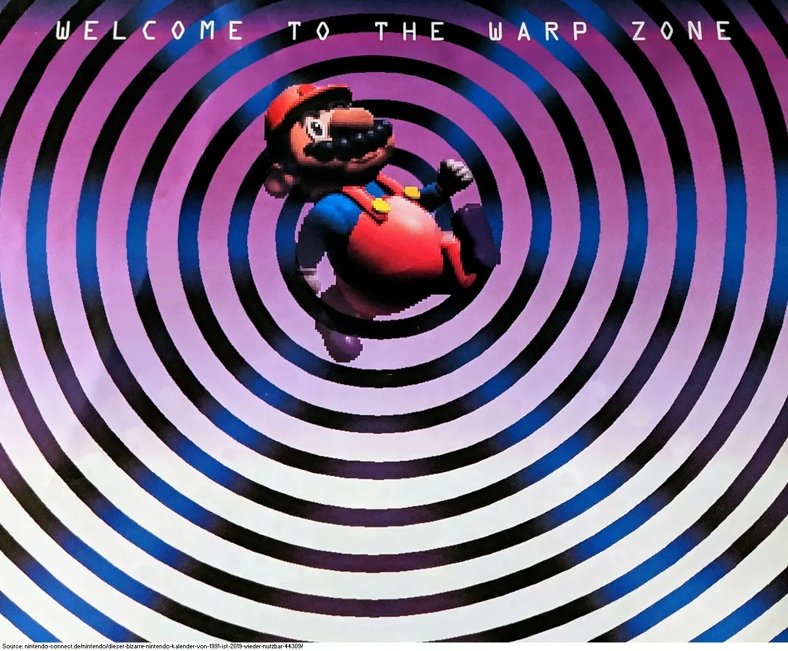
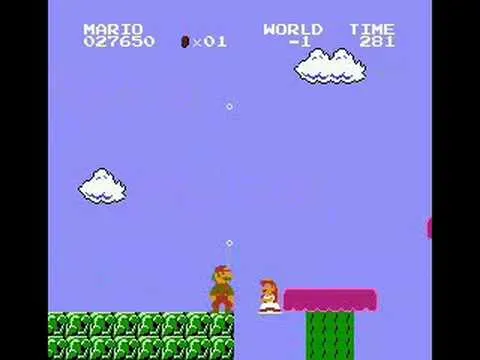
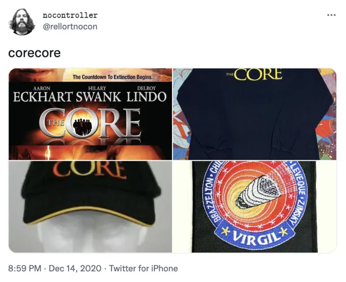
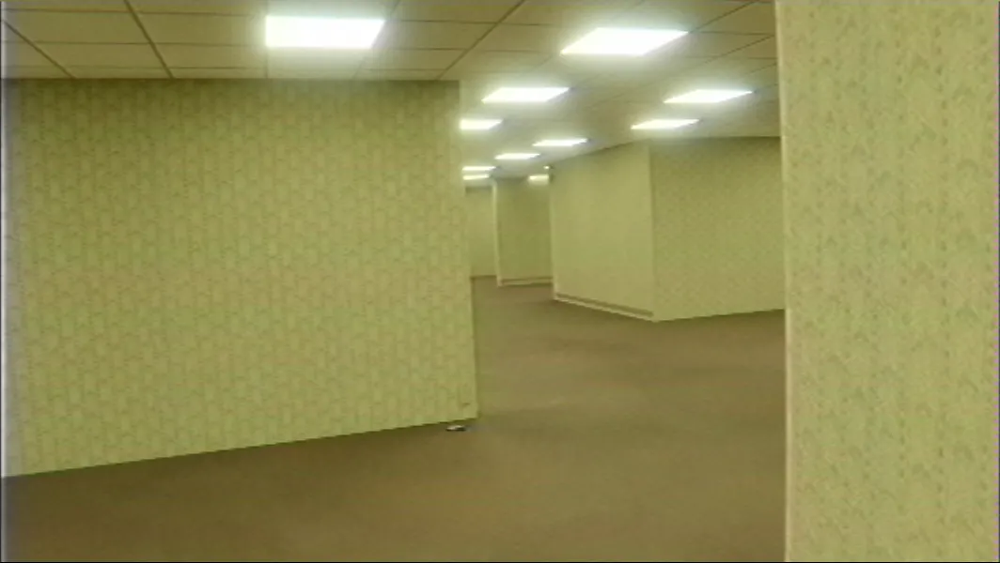
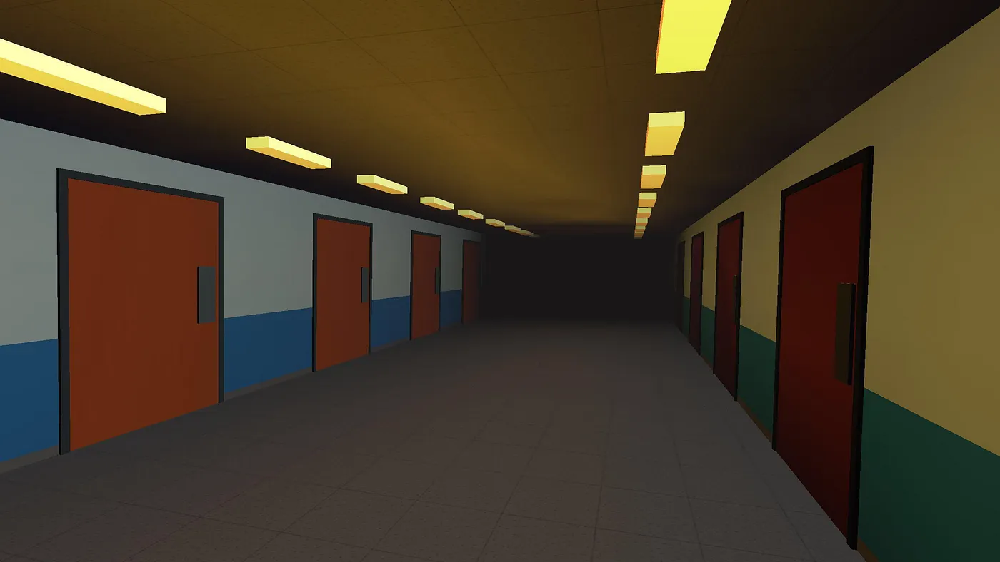
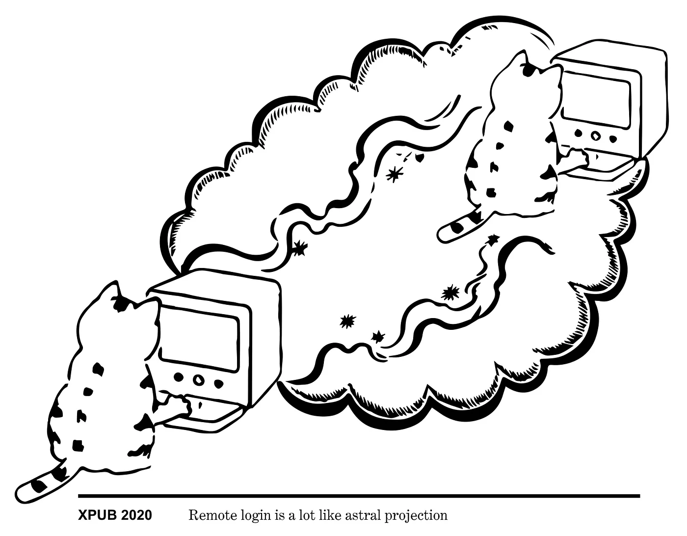
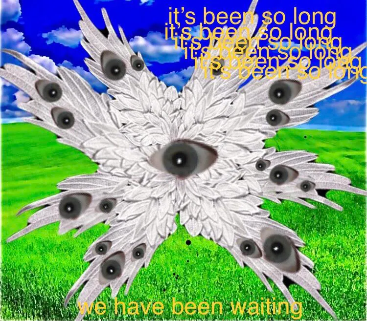

Drop #9 · January 19, 2024 · 15 min read
Hey everyone (▰˘◡˘▰)
Happy 2024 and welcome back to Drops, REINCANTAMENTO’s newsletter. Today we present a very weird double-review of two texts coming from the Italosphere. It’s a bizarre exploration of digital oddities and an update of my idea of technological enchantment. Enjoy.

To grasp new entities and to describe fluctuating phenomena, we need to elaborate new words. Sometimes are precisely such terms that can connotate human epistemological boundaries, precise enough to characterize the limits of our definitions. Matteo Lupetti’s UDO: A Guide to Videogames in the Anthropocene (Edizioni Sido, 2023) is a curious attempt in the direction of this epistemic uncertainty. UDO stands for Unidentified Digital Objects, echoing alien sightings and Wu Ming’s idea of Unidentified Narrative Objects. Under this nomenclature, the Italian game critic decides to embark on a multi-dimensional journey through the various layers of the videogame stack. The videogame object is traversed from a number of intersecting perspectives forging a unique lens on the issue at hand. A similar alien phenomenology is applied to our online life by the art historian Valentina Tanni in her new lysergic book Exit Reality (Nero, 2023). When read together, these two instances of what I like to call New Weird Italian Theory, compose a landscape of technological enchantment and mystery, which interests with some recurring topics of REINCANTAMENTO.

The Minus World
One might say that Lupetti is a particularly humble critic. Instead of articulating an encompassing theory of the videogame, the author is the first to tackle the idea that his object of study is, precisely, unidentifiable. The use of this term is a performative act, unhinging the epistemic pretensions of the critic, and recognizing, in the videogame object, an ineffable essence.
What is so mysterious about games? Each videogame player can precisely define what Red Dead Redemption 2 is, distinguish it from Persona 5, and not confuse it with Baldur’s Gate 3. Videogames would seem, at first glance, to be objects of consumption like many others. At the same time, many videogames - certainly the three mentioned - are considered first-rate artistic works. They are not just a simple commodity or another digital service.

Artistic works, in Western understanding, are usually signed by their creator. But who is the author of a videogame? With this first, simple question, our certainties begin to crack. Of course, if we talk about Death Stranding, on whose initial screen the inscription "A HIDEO KOJIMA'S GAME" stands, it seems easy to recognize the author. Kojima boasts of supervising every phase of development and, for this reason, seems to deserve the title of author. However, Kojima himself is nothing more than the poster boy for his semi-independent production house, Kojima Productions, which employs dozens, if not hundreds, of professional figures. Authoriality becomes even more nebulous when referred not to ateur games but to more mainstream pieces of software, like Super Mario Kart. Who’s the author of Mario Kart? We usually refer to it as a Nintendo game, forsaking the names of Shigeru Miyamoto, Tadashi Sugiyama, and Hideki Konno - considered “creators” on the game’s Wikipedia page - for the brand’s name, the big N.
Certainly, authoriality is an intricate matter but it’s not the only aspect where the unidentifiable core of videogame is revealed. However, what truly characterizes a game as a creative form is the interactive component: the laborious act of playing with a system. As Ian Bogost states:
The only problem is that you have to play the game to do so. And playing a game is a chore. That’s the big problem with videogames: To enjoy them, you have to play them. And playing them requires exerting the effort to operate them. Games are machines, and broken ones at that. The player’s job is to make them work again.
I, personally, feel the effort of playing a game more and more, especially when compared to the consumption of content conveyed by social media. I sometimes feel tired or simply too distracted to focus on the immersive experience of a digital game. This fact, Lupetti notices, explains the success of Twitch or YouTube gaming channels, which transform the player's agentivity into the viewer’s passivity.
To lighten such friction, game designers are usually committed to creating a smooth, funny, and user-friendly experience. This is achieved through a system of hints and associations, incentives, and environmental cues that guide the player’s journey. A closed door is associated with a key or some other opening mechanism, a broken machine with a missing piece hidden somewhere, a powerful enemy with some counter-move or secret strategy, and so on. Games are closed systems, designed by almighty creators who confer to the players a meaningful feeling of agency. As put by C. Thi Nguyen in his study on the philosophy of games:
To play a game is to take up unnecessary obstacles for the sake of the activity they make possible…Playing games inverts the usual relationship of means and ends. In practical life, we select means for the sake of an independently valuable end. In the game life, on the other hand, we select an arbitrary end for the sake of undergoing some particular means.
Within the sculpted space of a game, players can be free and creative to solve problems and puzzles, overcome obstacles, and, ultimately, complete their journey. Such freedom extends until the system’s limits: one can play unpredictably, virtuously, or speedrun the game, but still, the player is some sort of pawn following an already designed path.
Until something twitches.
Lupetti describes to the readers their experience playing the first Super Mario Bros. for NES, released in 1985 (!). The author recounts their attempts to reach a secret section contained in the level 1-2, named the Warp Zone. The Warp Zone is situated “above” the game’s regular surface and it seems slightly out of place, with the welcome message floating above the players. In this area, the iconic green pipes can be used as a sort of quick travel to reach advanced areas of the game without crossing all the levels.
Yet, there’s more to the Warp Zone. If the player accesses the Warp Zone through the wall, forcing the screen’s boundaries, it triggers an error in the game's code. The game erroneously believes the player is entering the second Warp Zone in World 4-2. This sets the stage for an unintended sequence of events that lead to what has become famously known as the "Minus World."

To understand this glitch, it's crucial to note that Super Mario Bros. retrieves graphical elements, including numbers, directly from the Game Pak rather than having them internally stored. In this glitch, a graphic representing a blank space is stored in a specific slot (slot 36) in the game's memory. This blank space image is then mistakenly used as a numerical identifier to determine the destination of the glitched pipe.
Upon entering the glitched pipe, the game attempts to take the player to what would logically be World 36. However, since this world does not exist in the game's regular structure, the unintended consequence is that players find themselves in what has come to be known as the Minus World. This world, in its original form for the Famicom and Nintendo Entertainment System, consists of a single level sourced from the second level of World 7. The Minus World is characterized by its peculiar loop of underwater stages, presenting players with a seemingly endless and inescapable aquatic maze. On the Japanese Famicom version, this stage looks even weirder with random appearances of Princess Peach and Mario swimming in the sky.

The Minus World is the product of the unpredictable interaction between the software - the game Pak - and the hardware - the NES system. A glitch that reveals the latent space of possibilities contained within the system designated by Nintendo: it is the software that shows agentivity, escaping the developers’ limits, and disclosing alternative paths of freedom to the players. A glitch breaks through the “fourth wall”, reminding us how the simulation we’re experiencing is encapsulated in a physical object with computational characteristics.
The glitch is a revelatory moment that breaks the illusion of control implied in the user-machine relationship. The glitch cracks the smoothness of the user condition - to borrow an expression from Silvio Lorusso - and brings us closer to the multi-layered truths scaffolded into a device. Once the controlled simulation starts to glitch, alternative threads of worldbuilding unfold showing eerie and incomplete environments where the players wander freely.
Videogames are, arguably, the most relevant cultural form of the century through their influence on every sphere of our lives. Gamification was but a clumsy attempt moved by marketing offices across the world: videogame, in its lack of identifiability, is the medium of the future. During an era marked by the breakdown of secular certainties and a need to reconsider humanity's position in the universe, Lupetti suggests that the videogame medium emerges as a spellbook capable of unsettling our established beliefs. This is why UDOs are the medium for the Anthropocene.
The ineffable core of the videogame identified by Lupetti, the mysterious power of interactivity, is at the heart of the spillover of the digital into the real. So much time spent playing and, all of a sudden, our online life has turned into a UDO itself, an odd glitched experience. Anomalies extend beyond gaming realms; consider TikTok's aesthetics assemblages, collective online rituals, therapeutic audio spells, and more. Get ready to non-clip reality and jump outside.
c̵̨̧̧̧̛͈̗̳͕̫̳͈͎̠̤͔̟̫̗̫͎̞͔̜̪̙̮̩̳͙̜̘̣͎̠͕͆͒́͊̎̒̔̆̈̾̂͑̏͌̽̈́̽̌͌̄̍̃͗̓̀̾̃̈́̕͜͠ͅļ̷̡̢̥̣͈̜͈̤͖͖͉̩̖͎̞̫͍͙́̃̄̋̚ͅͅḯ̴̡̛̤̟̖͈͚̈́̒̓̋̿̏̊̽̈̓̽͒̔̈́̋̓͆̒́̀̈́́̈̿̆̚͝͝͝͠p̴̢̬̗̘͔̻̳̠̠̠͎̥̤̰͎̦͕̼̝̄̎̉͌̑̌͜͝ ̴̹̖̟̤̹̻̆́͋́̋͋̆̽̋̑͗̄̾̎̀̿̈́͋̂̿͘̕̕͝ơ̸̡̡̨̼̘̦͕̝͔̭̤̼͍̤̥̲͙̳̤̭̭̗̠̘̟̲̦̼̦̭̖̑͗͋͑̑̀͂͛͂͑̿̌̽̍́́̈̄̄̿́͆̐́̒́͘͝͝ͅu̶̦̝͔͙̫̪̫̘̮̖̣̞̯̤͕̪̅̓͐̏̄̉̓̂̒̑̓͂͋̒͆̕͜͜͠ͅt̶̢̧̨̧̢̛͖͖̥͇̦͕̣͎͇̺̞̹̞̤͍͎̖̖͈̅̏̓͜ͅͅͅs̶̨̭̯̤̩͔͍̞̣͕̘͑̃͋́̚͜ͅi̷̢̧̟̹͔͇̠͙̦̖͈̪͎̯̗̭͇̯͔̣̺̠̞̥͇̱͚͈̥̤̠͙̦͖̦̤͇̱̦͒̔̇ͅd̷̡̖̗͚̜̹̩̹̻̤͊̿͗͜͝e̶̢̙̜̜̼͍̼̝̠͇̺̱̪͙̺͓̯̬̭͍̬͙̟̟͓̒̃̈͑̀͆̃̍͊͑̂̉̿͆̾̽̂͂̓̋̄̚͘͘͜͝͝ͅͅc̵̨̧̧̧̛͈̗̳͕̫̳͈͎̠̤͔̟̫̗̫͎̞͔̜̪̙̮̩̳͙̜̘̣͎̠͕͆͒́͊̎̒̔̆̈̾̂͑̏͌̽̈́̽̌͌̄̍̃͗̓̀̾̃̈́̕͜͠ͅļ̷̡̢̥̣͈̜͈̤͖͖͉̩̖͎̞̫͍͙́̃̄̋̚ͅͅḯ̴̡̛̤̟̖͈͚̈́̒̓̋̿̏̊̽̈̓̽͒̔̈́̋̓͆̒́̀̈́́̈̿̆̚͝͝͝͠p̴̢̬̗̘͔̻̳̠̠̠͎̥̤̰͎̦͕̼̝̄̎̉͌̑̌͜͝ ̴̹̖̟̤̹̻̆́͋́̋͋̆̽̋̑͗̄̾̎̀̿̈́͋̂̿͘̕̕͝ơ̸̡̡̨̼̘̦͕̝͔̭̤̼͍̤̥̲͙̳̤̭̭̗̠̘̟̲̦̼̦̭̖̑͗͋͑̑̀͂͛͂͑̿̌̽̍́́̈̄̄̿́͆̐́̒́͘͝͝ͅu̶̦̝͔͙̫̪̫̘̮̖̣̞̯̤͕̪̅̓͐̏̄̉̓̂̒̑̓͂͋̒͆̕͜͜͠ͅt̶̢̧̨̧̢̛͖͖̥͇̦͕̣͎͇̺̞̹̞̤͍͎̖̖͈̅̏̓͜ͅͅͅs̶̨̭̯̤̩͔͍̞̣͕̘͑̃͋́̚͜ͅi̷̢̧̟̹͔͇̠͙̦̖͈̪͎̯̗̭͇̯͔̣̺̠̞̥͇̱͚͈̥̤̠͙̦͖̦̤͇̱̦͒̔̇ͅd̷̡̖̗͚̜̹̩̹̻̤͊̿͗͜͝e̶̢̙̜̜̼͍̼̝̠͇̺̱̪͙̺͓̯̬̭͍̬͙̟̟͓̒̃̈͑̀͆̃̍͊͑̂̉̿͆̾̽̂͂̓̋̄̚͘͘͜͝͝ͅͅc̵̨̧̧̧̛͈̗̳͕̫̳͈͎̠̤͔̟̫̗̫͎̞͔̜̪̙̮̩̳͙̜̘̣͎̠͕͆͒́͊̎̒̔̆̈̾̂͑̏͌̽̈́̽̌͌̄̍̃͗̓̀̾̃̈́̕͜͠ͅļ̷̡̢̥̣͈̜͈̤͖͖͉̩̖͎̞̫͍͙́̃̄̋̚ͅͅḯ̴̡̛̤̟̖͈͚̈́̒̓̋̿̏̊̽̈̓̽͒̔̈́̋̓͆̒́̀̈́́̈̿̆̚͝͝͝͠p̴̢̬̗̘͔̻̳̠̠̠͎̥̤̰͎̦͕̼̝̄̎̉͌̑̌͜͝ ̴̹̖̟̤̹̻̆́͋́̋͋̆̽̋̑͗̄̾̎̀̿̈́͋̂̿͘̕̕͝ơ̸̡̡̨̼̘̦͕̝͔̭̤̼͍̤̥̲͙̳̤̭̭̗̠̘̟̲̦̼̦̭̖̑͗͋͑̑̀͂͛͂͑̿̌̽̍́́̈̄̄̿́͆̐́̒́͘͝͝ͅu̶̦̝͔͙̫̪̫̘̮̖̣̞̯̤͕̪̅̓͐̏̄̉̓̂̒̑̓͂͋̒͆̕͜͜͠ͅt̶̢̧̨̧̢̛͖͖̥͇̦͕̣͎͇̺̞̹̞̤͍͎̖̖͈̅̏̓͜ͅͅͅs̶̨̭̯̤̩͔͍̞̣͕̘͑̃͋́̚͜ͅi̷̢̧̟̹͔͇̠͙̦̖͈̪͎̯̗̭͇̯͔̣̺̠̞̥͇̱͚͈̥̤̠͙̦͖̦̤͇̱̦͒̔̇ͅd̷̡̖̗͚̜̹̩̹̻̤͊̿͗͜͝e̶̢̙̜̜̼͍̼̝̠͇̺̱̪͙̺͓̯̬̭͍̬͙̟̟͓̒̃̈͑̀͆̃̍͊͑̂̉̿͆̾̽̂͂̓̋̄̚͘͘͜͝͝ͅͅc̵̨̧̧̧̛͈̗̳͕̫̳͈͎̠̤͔̟̫̗̫͎̞͔̜̪̙̮̩̳͙̜̘̣͎̠͕͆͒́͊̎̒̔̆̈̾̂͑̏͌̽̈́̽̌͌̄̍̃͗̓̀̾̃̈́̕͜͠ͅļ̷̡̢̥̣͈̜͈̤͖͖͉̩̖͎̞̫͍͙́̃̄̋̚ͅͅḯ̴̡̛̤̟̖͈͚̈́̒̓̋̿̏̊̽̈̓̽͒̔̈́̋̓͆̒́̀̈́́̈̿̆̚͝͝͝͠p̴̢̬̗̘͔̻̳̠̠̠͎̥̤̰͎̦͕̼̝̄̎̉͌̑̌͜͝ ̴̹̖̟̤̹̻̆́͋́̋͋̆̽̋̑͗̄̾̎̀̿̈́͋̂̿͘̕̕͝ơ̸̡̡̨̼̘̦͕̝͔̭̤̼͍̤̥̲͙̳̤̭̭̗̠̘̟̲̦̼̦̭̖̑͗͋͑̑̀͂͛͂͑̿̌̽̍́́̈̄̄̿́͆̐́̒́͘͝͝ͅu̶̦̝͔͙̫̪̫̘̮̖̣̞̯̤͕̪̅̓͐̏̄̉̓̂̒̑̓͂͋̒͆̕͜͜͠ͅt̶̢̧̨̧̢̛͖͖̥͇̦͕̣͎͇̺̞̹̞̤͍͎̖̖͈̅̏̓͜ͅͅͅs̶̨̭̯̤̩͔͍̞̣͕̘͑̃͋́̚͜ͅi̷̢̧̟̹͔͇̠͙̦̖͈̪͎̯̗̭͇̯͔̣̺̠̞̥͇̱͚͈̥̤̠͙̦͖̦̤͇̱̦͒̔̇ͅd̷̡̖̗͚̜̹̩̹̻̤͊̿͗͜͝e̶̢̙̜̜̼͍̼̝̠͇̺̱̪͙̺͓̯̬̭͍̬͙̟̟͓̒̃̈͑̀͆̃̍͊͑̂̉̿͆̾̽̂͂̓̋̄̚͘͘͜͝͝ͅͅc̵̨̧̧̧̛͈̗̳͕̫̳͈͎̠̤͔̟̫̗̫͎̞͔̜̪̙̮̩̳͙̜̘̣͎̠͕͆͒́͊̎̒̔̆̈̾̂͑̏͌̽̈́̽̌͌̄̍̃͗̓̀̾̃̈́̕͜͠ͅļ̷̡̢̥̣͈̜͈̤͖͖͉̩̖͎̞̫͍͙́̃̄̋̚ͅͅḯ̴̡̛̤̟̖͈͚̈́̒̓̋̿̏̊̽̈̓̽͒̔̈́̋̓͆̒́̀̈́́̈̿̆̚͝͝͝͠p̴̢̬̗̘͔̻̳̠̠̠͎̥̤̰͎̦͕̼̝̄̎̉͌̑̌͜͝ ̴̹̖̟̤̹̻̆́͋́̋͋̆̽̋̑͗̄̾̎̀̿̈́͋̂̿͘̕̕͝ơ̸̡̡̨̼̘̦͕̝͔̭̤̼͍̤̥̲͙̳̤̭̭̗̠̘̟̲̦̼̦̭̖̑͗͋͑̑̀͂͛͂͑̿̌̽̍́́̈̄̄̿́͆̐́̒́͘͝͝ͅu̶̦̝͔͙̫̪̫̘̮̖̣̞̯̤͕̪̅̓͐̏̄̉̓̂̒̑̓͂͋̒͆̕͜͜͠ͅt̶̢̧̨̧̢̛͖͖̥͇̦͕̣͎͇̺̞̹̞̤͍͎̖̖͈̅̏̓͜ͅͅͅs̶̨̭̯̤̩͔͍̞̣͕̘͑̃͋́̚͜ͅi̷̢̧̟̹͔͇̠͙̦̖͈̪͎̯̗̭͇̯͔̣̺̠̞̥͇̱͚͈̥̤̠͙̦͖̦̤͇̱̦͒̔̇ͅd̷̡̖̗͚̜̹̩̹̻̤͊̿͗͜͝e̶̢̙̜̜̼͍̼̝̠͇̺̱̪͙̺͓̯̬̭͍̬͙̟̟͓̒̃̈͑̀͆̃̍͊͑̂̉̿͆̾̽̂͂̓̋̄̚͘͘͜͝͝ͅͅc̵̨̧̧̧̛͈̗̳͕̫̳͈͎̠̤͔̟̫̗̫͎̞͔̜̪̙̮̩̳͙̜̘̣͎̠͕͆͒́͊̎̒̔̆̈̾̂͑̏͌̽̈́̽̌͌̄̍̃͗̓̀̾̃̈́̕͜͠ͅļ̷̡̢̥̣͈̜͈̤͖͖͉̩̖͎̞̫͍͙́̃̄̋̚ͅͅḯ̴̡̛̤̟̖͈͚̈́̒̓̋̿̏̊̽̈̓̽͒̔̈́̋̓͆̒́̀̈́́̈̿̆̚͝͝͝͠p̴̢̬̗̘͔̻̳̠̠̠͎̥̤̰͎̦͕̼̝̄̎̉͌̑̌͜͝ ̴̹̖̟̤̹̻̆́͋́̋͋̆̽̋̑͗̄̾̎̀̿̈́͋̂̿͘̕̕͝ơ̸̡̡̨̼̘̦͕̝͔̭̤̼͍̤̥̲͙̳̤̭̭̗̠̘̟̲̦̼̦̭̖̑͗͋͑̑̀͂͛͂͑̿̌̽̍́́̈̄̄̿́͆̐́̒́͘͝͝ͅu̶̦̝͔͙̫̪̫̘̮̖̣̞̯̤͕̪̅̓͐̏̄̉̓̂̒̑̓͂͋̒͆̕͜͜͠ͅt̶̢̧̨̧̢̛͖͖̥͇̦͕̣͎͇̺̞̹̞̤͍͎̖̖͈̅̏̓͜ͅͅͅs̶̨̭̯̤̩͔͍̞̣͕̘͑̃͋́̚͜ͅi̷̢̧̟̹͔͇̠͙̦̖͈̪͎̯̗̭͇̯͔̣̺̠̞̥͇̱͚͈̥̤̠͙̦͖̦̤͇̱̦͒̔̇ͅd̷̡̖̗͚̜̹̩̹̻̤͊̿͗͜͝e̶̢̙̜̜̼͍̼̝̠͇̺̱̪͙̺͓̯̬̭͍̬͙̟̟͓̒̃̈͑̀͆̃̍͊͑̂̉̿͆̾̽̂͂̓̋̄̚͘͘͜͝͝ͅͅc̵̨̧̧̧̛͈̗̳͕̫̳͈͎̠̤͔̟̫̗̫͎̞͔̜̪̙̮̩̳͙̜̘̣͎̠͕͆͒́͊̎̒̔̆̈̾̂͑̏͌̽̈́̽̌͌̄̍̃͗̓̀̾̃̈́̕͜͠ͅļ̷̡̢̥̣͈̜͈̤͖͖͉̩̖͎̞̫͍͙́̃̄̋̚ͅͅḯ̴̡̛̤̟̖͈͚̈́̒̓̋̿̏̊̽̈̓̽͒̔̈́̋̓͆̒́̀̈́́̈̿̆̚͝͝͝͠p̴̢̬̗̘͔̻̳̠̠̠͎̥̤̰͎̦͕̼̝̄̎̉͌̑̌͜͝ ̴̹̖̟̤̹̻̆́͋́̋͋̆̽̋̑͗̄̾̎̀̿̈́͋̂̿͘̕̕͝ơ̸̡̡̨̼̘̦͕̝͔̭̤̼͍̤̥̲͙̳̤̭̭̗̠̘̟̲̦̼̦̭̖̑͗͋͑̑̀͂͛͂͑̿̌̽̍́́̈̄̄̿́͆̐́̒́͘͝͝ͅu̶̦̝͔͙̫̪̫̘̮̖̣̞̯̤͕̪̅̓͐̏̄̉̓̂̒̑̓͂͋̒͆̕͜͜͠ͅt̶̢̧̨̧̢̛͖͖̥͇̦͕̣͎͇̺̞̹̞̤͍͎̖̖͈̅̏̓͜ͅͅͅs̶̨̭̯̤̩͔͍̞̣͕̘͑̃͋́̚͜ͅi̷̢̧̟̹͔͇̠͙̦̖͈̪͎̯̗̭͇̯͔̣̺̠̞̥͇̱͚͈̥̤̠͙̦͖̦̤͇̱̦͒̔̇ͅd̷̡̖̗͚̜̹̩̹̻̤͊̿͗͜͝e̶̢̙̜̜̼͍̼̝̠͇̺̱̪͙̺͓̯̬̭͍̬͙̟̟͓̒̃̈͑̀͆̃̍͊͑̂̉̿͆̾̽̂͂̓̋̄̚͘͘͜͝͝ͅͅc̵̨̧̧̧̛͈̗̳͕̫̳͈͎̠̤͔̟̫̗̫͎̞͔̜̪̙̮̩̳͙̜̘̣͎̠͕͆͒́͊̎̒̔̆̈̾̂͑̏͌̽̈́̽̌͌̄̍̃͗̓̀̾̃̈́̕͜͠ͅļ̷̡̢̥̣͈̜͈̤͖͖͉̩̖͎̞̫͍͙́̃̄̋̚ͅͅḯ̴̡̛̤̟̖͈͚̈́̒̓̋̿̏̊̽̈̓̽͒̔̈́̋̓͆̒́̀̈́́̈̿̆̚͝͝͝͠p̴̢̬̗̘͔̻̳̠̠̠͎̥̤̰͎̦͕̼̝̄̎̉͌̑̌͜͝ ̴̹̖̟̤̹̻̆́͋́̋͋̆̽̋̑͗̄̾̎̀̿̈́͋̂̿͘̕̕͝ơ̸̡̡̨̼̘̦͕̝͔̭̤̼͍̤̥̲͙̳̤̭̭̗̠̘̟̲̦̼̦̭̖̑͗͋͑̑̀͂͛͂͑̿̌̽̍́́̈̄̄̿́͆̐́̒́͘͝͝ͅu̶̦̝͔͙̫̪̫̘̮̖̣̞̯̤͕̪̅̓͐̏̄̉̓̂̒̑̓͂͋̒͆̕͜͜͠ͅt̶̢̧̨̧̢̛͖͖̥͇̦͕̣͎͇̺̞̹̞̤͍͎̖̖͈̅̏̓͜ͅͅͅs̶̨̭̯̤̩͔͍̞̣͕̘͑̃͋́̚͜ͅi̷̢̧̟̹͔͇̠͙̦̖͈̪͎̯̗̭͇̯͔̣̺̠̞̥͇̱͚͈̥̤̠͙̦͖̦̤͇̱̦͒̔̇ͅd̷̡̖̗͚̜̹̩̹̻̤͊̿͗͜͝e̶̢̙̜̜̼͍̼̝̠͇̺̱̪͙̺͓̯̬̭͍̬͙̟̟͓̒̃̈͑̀͆̃̍͊͑̂̉̿͆̾̽̂͂̓̋̄̚͘͘͜͝͝ͅͅc̵̨̧̧̧̛͈̗̳͕̫̳͈͎̠̤͔̟̫̗̫͎̞͔̜̪̙̮̩̳͙̜̘̣͎̠͕͆͒́͊̎̒̔̆̈̾̂͑̏͌̽̈́̽̌͌̄̍̃͗̓̀̾̃̈́̕͜͠ͅļ̷̡̢̥̣͈̜͈̤͖͖͉̩̖͎̞̫͍͙́̃̄̋̚ͅͅḯ̴̡̛̤̟̖͈͚̈́̒̓̋̿̏̊̽̈̓̽͒̔̈́̋̓͆̒́̀̈́́̈̿̆̚͝͝͝͠p̴̢̬̗̘͔̻̳̠̠̠͎̥̤̰͎̦͕̼̝̄̎̉͌̑̌͜͝ ̴̹̖̟̤̹̻̆́͋́̋͋̆̽̋̑͗̄̾̎̀̿̈́͋̂̿͘̕̕͝ơ̸̡̡̨̼̘̦͕̝͔̭̤̼͍̤̥̲͙̳̤̭̭̗̠̘̟̲̦̼̦̭̖̑͗͋͑̑̀͂͛͂͑̿̌̽̍́́̈̄̄̿́͆̐́̒́͘͝͝ͅu̶̦̝͔͙̫̪̫̘̮̖̣̞̯̤͕̪̅̓͐̏̄̉̓̂̒̑̓͂͋̒͆̕͜͜͠ͅt̶̢̧̨̧̢̛͖͖̥͇̦͕̣͎͇̺̞̹̞̤͍͎̖̖͈̅̏̓͜ͅͅͅs̶̨̭̯̤̩͔͍̞̣͕̘͑̃͋́̚͜ͅi̷̢̧̟̹͔͇̠͙̦̖͈̪͎̯̗̭͇̯͔̣̺̠̞̥͇̱͚͈̥̤̠͙̦͖̦̤͇̱̦͒̔̇ͅd̷̡̖̗͚̜̹̩̹̻̤͊̿͗͜͝e̶̢̙̜̜̼͍̼̝̠͇̺̱̪͙̺͓̯̬̭͍̬͙̟̟͓̒̃̈͑̀͆̃̍͊͑̂̉̿͆̾̽̂͂̓̋̄̚͘͘͜͝͝ͅͅc̵̨̧̧̧̛͈̗̳͕̫̳͈͎̠̤͔̟̫̗̫͎̞͔̜̪̙̮̩̳͙̜̘̣͎̠͕͆͒́͊̎̒̔̆̈̾̂͑̏͌̽̈́̽̌͌̄̍̃͗̓̀̾̃̈́̕͜͠ͅļ̷̡̢̥̣͈̜͈̤͖͖͉̩̖͎̞̫͍͙́̃̄̋̚ͅͅḯ̴̡̛̤̟̖͈͚̈́̒̓̋̿̏̊̽̈̓̽͒̔̈́̋̓͆̒́̀̈́́̈̿̆̚͝͝͝͠p̴̢̬̗̘͔̻̳̠̠̠͎̥̤̰͎̦͕̼̝̄̎̉͌̑̌͜͝ ̴̹̖̟̤̹̻̆́͋́̋͋̆̽̋̑͗̄̾̎̀̿̈́͋̂̿͘̕̕͝ơ̸̡̡̨̼̘̦͕̝͔̭̤̼͍̤̥̲͙̳̤̭̭̗̠̘̟̲̦̼̦̭̖̑͗͋͑̑̀͂͛͂͑̿̌̽̍́́̈̄̄̿́͆̐́̒́͘͝͝ͅu̶̦̝͔͙̫̪̫̘̮̖̣̞̯̤͕̪̅̓͐̏̄̉̓̂̒̑̓͂͋̒͆̕͜͜͠ͅt̶̢̧̨̧̢̛͖͖̥͇̦͕̣͎͇̺̞̹̞̤͍͎̖̖͈̅̏̓͜ͅͅͅs̶̨̭̯̤̩͔͍̞̣͕̘͑̃͋́̚͜ͅi̷̢̧̟̹͔͇̠͙̦̖͈̪͎̯̗̭͇̯͔̣̺̠̞̥͇̱͚͈̥̤̠͙̦͖̦̤͇̱̦͒̔̇ͅd̷̡̖̗͚̜̹̩̹̻̤͊̿͗͜͝e̶̢̙̜̜̼͍̼̝̠͇̺̱̪͙̺͓̯̬̭͍̬͙̟̟͓̒̃̈͑̀͆̃̍͊͑̂̉̿͆̾̽̂͂̓̋̄̚͘͘͜͝͝ͅͅc̵̨̧̧̧̛͈̗̳͕̫̳͈͎̠̤͔̟̫̗̫͎̞͔̜̪̙̮̩̳͙̜̘̣͎̠͕͆͒́͊̎̒̔̆̈̾̂͑̏͌̽̈́̽̌͌̄̍̃͗̓̀̾̃̈́̕͜͠ͅļ̷̡̢̥̣͈̜͈̤͖͖͉̩̖͎̞̫͍͙́̃̄̋̚ͅͅḯ̴̡̛̤̟̖͈͚̈́̒̓̋̿̏̊̽̈̓̽͒̔̈́̋̓͆̒́̀̈́́̈̿̆̚͝͝͝͠p̴̢̬̗̘͔̻̳̠̠̠͎̥̤̰͎̦͕̼̝̄̎̉͌̑̌͜͝ ̴̹̖̟̤̹̻̆́͋́̋͋̆̽̋̑͗̄̾̎̀̿̈́͋̂̿͘̕̕͝ơ̸̡̡̨̼̘̦͕̝͔̭̤̼͍̤̥̲͙̳̤̭̭̗̠̘̟̲̦̼̦̭̖̑͗͋͑̑̀͂͛͂͑̿̌̽̍́́̈̄̄̿́͆̐́̒́͘͝͝ͅu̶̦̝͔͙̫̪̫̘̮̖̣̞̯̤͕̪̅̓͐̏̄̉̓̂̒̑̓͂͋̒͆̕͜͜͠ͅt̶̢̧̨̧̢̛͖͖̥͇̦͕̣͎͇̺̞̹̞̤͍͎̖̖͈̅̏̓͜ͅͅͅs̶̨̭̯̤̩͔͍̞̣͕̘͑̃͋́̚͜ͅi̷̢̧̟̹͔͇̠͙̦̖͈̪͎̯̗̭͇̯͔̣̺̠̞̥͇̱͚͈̥̤̠͙̦͖̦̤͇̱̦͒̔̇ͅd̷̡̖̗͚̜̹̩̹̻̤͊̿͗͜͝e̶̢̙̜̜̼͍̼̝̠͇̺̱̪͙̺͓̯̬̭͍̬͙̟̟͓̒̃̈͑̀͆̃̍͊͑̂̉̿͆̾̽̂͂̓̋̄̚͘͘͜͝͝ͅͅc̵̨̧̧̧̛͈̗̳͕̫̳͈͎̠̤͔̟̫̗̫͎̞͔̜̪̙̮̩̳͙̜̘̣͎̠͕͆͒́͊̎̒̔̆̈̾̂͑̏͌̽̈́̽̌͌̄̍̃͗̓̀̾̃̈́̕͜͠ͅļ̷̡̢̥̣͈̜͈̤͖͖͉̩̖͎̞̫͍͙́̃̄̋̚ͅͅḯ̴̡̛̤̟̖͈͚̈́̒̓̋̿̏̊̽̈̓̽͒̔̈́̋̓͆̒́̀̈́́̈̿̆̚͝͝͝͠p̴̢̬̗̘͔̻̳̠̠̠͎̥̤̰͎̦͕̼̝̄̎̉͌̑̌͜͝ ̴̹̖̟̤̹̻̆́͋́̋͋̆̽̋̑͗̄̾̎̀̿̈́͋̂̿͘̕̕͝ơ̸̡̡̨̼̘̦͕̝͔̭̤̼͍̤̥̲͙̳̤̭̭̗̠̘̟̲̦̼̦̭̖̑͗͋͑̑̀͂͛͂͑̿̌̽̍́́̈̄̄̿́͆̐́̒́͘͝͝ͅu̶̦̝͔͙̫̪̫̘̮̖̣̞̯̤͕̪̅̓͐̏̄̉̓̂̒̑̓͂͋̒͆̕͜͜͠ͅt̶̢̧̨̧̢̛͖͖̥͇̦͕̣͎͇̺̞̹̞̤͍͎̖̖͈̅̏̓͜ͅͅͅs̶̨̭̯̤̩͔͍̞̣͕̘͑̃͋́̚͜ͅi̷̢̧̟̹͔͇̠͙̦̖͈̪͎̯̗̭͇̯͔̣̺̠̞̥͇̱͚͈̥̤̠͙̦͖̦̤͇̱̦͒̔̇ͅd̷̡̖̗͚̜̹̩̹̻̤͊̿͗͜͝e̶̢̙̜̜̼͍̼̝̠͇̺̱̪͙̺͓̯̬̭͍̬͙̟̟͓̒̃̈͑̀͆̃̍͊͑̂̉̿͆̾̽̂͂̓̋̄̚͘͘͜͝͝ͅͅc̵̨̧̧̧̛͈̗̳͕̫̳͈͎̠̤͔̟̫̗̫͎̞͔̜̪̙̮̩̳͙̜̘̣͎̠͕͆͒́͊̎̒̔̆̈̾̂͑̏͌̽̈́̽̌͌̄̍̃͗̓̀̾̃̈́̕͜͠ͅļ̷̡̢̥̣͈̜͈̤͖͖͉̩̖͎̞̫͍͙́̃̄̋̚ͅͅḯ̴̡̛̤̟̖͈͚̈́̒̓̋̿̏̊̽̈̓̽͒̔̈́̋̓͆̒́̀̈́́̈̿̆̚͝͝͝͠p̴̢̬̗̘͔̻̳̠̠̠͎̥̤̰͎̦͕̼̝̄̎̉͌̑̌͜͝ ̴̹̖̟̤̹̻̆́͋́̋͋̆̽̋̑͗̄̾̎̀̿̈́͋̂̿͘̕̕͝ơ̸̡̡̨̼̘̦͕̝͔̭̤̼͍̤̥̲͙̳̤̭̭̗̠̘̟̲̦̼̦̭̖̑͗͋͑̑̀͂͛͂͑̿̌̽̍́́̈̄̄̿́͆̐́̒́͘͝͝ͅu̶̦̝͔͙̫̪̫̘̮̖̣̞̯̤͕̪̅̓͐̏̄̉̓̂̒̑̓͂͋̒͆̕͜͜͠ͅt̶̢̧̨̧̢̛͖͖̥͇̦͕̣͎͇̺̞̹̞̤͍͎̖̖͈̅̏̓͜ͅͅͅs̶̨̭̯̤̩͔͍̞̣͕̘͑̃͋́̚͜ͅi̷̢̧̟̹͔͇̠͙̦̖͈̪͎̯̗̭͇̯͔̣̺̠̞̥͇̱͚͈̥̤̠͙̦͖̦̤͇̱̦͒̔̇ͅd̷̡̖̗͚̜̹̩̹̻̤͊̿͗͜͝e̶̢̙̜̜̼͍̼̝̠͇̺̱̪͙̺͓̯̬̭͍̬͙̟̟͓̒̃̈͑̀͆̃̍͊͑̂̉̿͆̾̽̂͂̓̋̄̚͘͘͜͝͝ͅͅc̵̨̧̧̧̛͈̗̳͕̫̳͈͎̠̤͔̟̫̗̫͎̞͔̜̪̙̮̩̳͙̜̘̣͎̠͕͆͒́͊̎̒̔̆̈̾̂͑̏͌̽̈́̽̌͌̄̍̃͗̓̀̾̃̈́̕͜͠ͅļ̷̡̢̥̣͈̜͈̤͖͖͉̩̖͎̞̫͍͙́̃̄̋̚ͅͅḯ̴̡̛̤̟̖͈͚̈́̒̓̋̿̏̊̽̈̓̽͒̔̈́̋̓͆̒́̀̈́́̈̿̆̚͝͝͝͠p̴̢̬̗̘͔̻̳̠̠̠͎̥̤̰͎̦͕̼̝̄̎̉͌̑̌͜͝ ̴̹̖̟̤̹̻̆́͋́̋͋̆̽̋̑͗̄̾̎̀̿̈́͋̂̿͘̕̕͝ơ̸̡̡̨̼̘̦͕̝͔̭̤̼͍̤̥̲͙̳̤̭̭̗̠̘̟̲̦̼̦̭̖̑͗͋͑̑̀͂͛͂͑̿̌̽̍́́̈̄̄̿́͆̐́̒́͘͝͝ͅu̶̦̝͔͙̫̪̫̘̮̖̣̞̯̤͕̪̅̓͐̏̄̉̓̂̒̑̓͂͋̒͆̕͜͜͠ͅt̶̢̧̨̧̢̛͖͖̥͇̦͕̣͎͇̺̞̹̞̤͍͎̖̖͈̅̏̓͜ͅͅͅs̶̨̭̯̤̩͔͍̞̣͕̘͑̃͋́̚͜ͅi̷̢̧̟̹͔͇̠͙̦̖͈̪͎̯̗̭͇̯͔̣̺̠̞̥͇̱͚͈̥̤̠͙̦͖̦̤͇̱̦͒̔̇ͅd̷̡̖̗͚̜̹̩̹̻̤͊̿͗͜͝e̶̢̙̜̜̼͍̼̝̠͇̺̱̪͙̺͓̯̬̭͍̬͙̟̟͓̒̃̈͑̀͆̃̍͊͑̂̉̿͆̾̽̂͂̓̋̄̚͘͘͜͝͝ͅͅc̵̨̧̧̧̛͈̗̳͕̫̳͈͎̠̤͔̟̫̗̫͎̞͔̜̪̙̮̩̳͙̜̘̣͎̠͕͆͒́͊̎̒̔̆̈̾̂͑̏͌̽̈́̽̌͌̄̍̃͗̓̀̾̃̈́̕͜͠ͅļ̷̡̢̥̣͈̜͈̤͖͖͉̩̖͎̞̫͍͙́̃̄̋̚ͅͅḯ̴̡̛̤̟̖͈͚̈́̒̓̋̿̏̊̽̈̓̽͒̔̈́̋̓͆̒́̀̈́́̈̿̆̚͝͝͝͠p̴̢̬̗̘͔̻̳̠̠̠͎̥̤̰͎̦͕̼̝̄̎̉͌̑̌͜͝ ̴̹̖̟̤̹̻̆́͋́̋͋̆̽̋̑͗̄̾̎̀̿̈́͋̂̿͘̕̕͝ơ̸̡̡̨̼̘̦͕̝͔̭̤̼͍̤̥̲͙̳̤̭̭̗̠̘̟̲̦̼̦̭̖̑͗͋͑̑̀͂͛͂͑̿̌̽̍́́̈̄̄̿́͆̐́̒́͘͝͝ͅu̶̦̝͔͙̫̪̫̘̮̖̣̞̯̤͕̪̅̓͐̏̄̉̓̂̒̑̓͂͋̒͆̕͜͜͠ͅt̶̢̧̨̧̢̛͖͖̥͇̦͕̣͎͇̺̞̹̞̤͍͎̖̖͈̅̏̓͜ͅͅͅs̶̨̭̯̤̩͔͍̞̣͕̘͑̃͋́̚͜ͅi̷̢̧̟̹͔͇̠͙̦̖͈̪͎̯̗̭͇̯͔̣̺̠̞̥͇̱͚͈̥̤̠͙̦͖̦̤͇̱̦͒̔̇ͅd̷̡̖̗͚̜̹̩̹̻̤͊̿͗͜͝e̶̢̙̜̜̼͍̼̝̠͇̺̱̪͙̺͓̯̬̭͍̬͙̟̟͓̒̃̈͑̀͆̃̍͊͑̂̉̿͆̾̽̂͂̓̋̄̚͘͘͜͝͝ͅͅc̴͔̣͍̽̐̚l̸̢̨̠͎̗̣̮̪̙͇͖͉̟̇̐͆͛͊̎͝i̶͍̹̝͍̙͚͍͇͐͂p̶̡̛͉̟̩̻̻̮̆̿̐̇̎̀̉ ̵̙̎̀̿͒̿̈́͒͗̍̉͠o̵̢̦̠͈͓̙̭͎̞̜̾̔̾̋̎̾͘u̴̢̡̡͉͈͚̮̭̎t̶͚̠͚̖̹̤̣̣̣̦̩̲͈̅̃̓͒̇s̶̢̤̳̺̥͇͓͆̄̍͑i̴͇͋͋̑̎̾́̎̑͗̚̕͠d̴̗̗̼̯̥͔͈̺̺̾͊̀̅e̸̝̲̰͙̒͂̑̄̀͊̔ͅc̴͔̣͍̽̐̚l̸̢̨̠͎̗̣̮̪̙͇͖͉̟̇̐͆͛͊̎͝i̶͍̹̝͍̙͚͍͇͐͂p̶̡̛͉̟̩̻̻̮̆̿̐̇̎̀̉ ̵̙̎̀̿͒̿̈́͒͗̍̉͠o̵̢̦̠͈͓̙̭͎̞̜̾̔̾̋̎̾͘u̴̢̡̡͉͈͚̮̭̎t̶͚̠͚̖̹̤̣̣̣̦̩̲͈̅̃̓͒̇s̶̢̤̳̺̥͇͓͆̄̍͑i̴͇͋͋̑̎̾́̎̑͗̚̕͠d̴̗̗̼̯̥͔͈̺̺̾͊̀̅e̸̝̲̰͙̒͂̑̄̀͊̔ͅc̴͔̣͍̽̐̚l̸̢̨̠͎̗̣̮̪̙͇͖͉̟̇̐͆͛͊̎͝i̶͍̹̝͍̙͚͍͇͐͂p̶̡̛͉̟̩̻̻̮̆̿̐̇̎̀̉ ̵̙̎̀̿͒̿̈́͒͗̍̉͠o̵̢̦̠͈͓̙̭͎̞̜̾̔̾̋̎̾͘u̴̢̡̡͉͈͚̮̭̎t̶͚̠͚̖̹̤̣̣̣̦̩̲͈̅̃̓͒̇s̶̢̤̳̺̥͇͓͆̄̍͑i̴͇͋͋̑̎̾́̎̑͗̚̕͠d̴̗̗̼̯̥͔͈̺̺̾͊̀̅e̸̝̲̰͙̒͂̑̄̀͊̔ͅc̴͔̣͍̽̐̚l̸̢̨̠͎̗̣̮̪̙͇͖͉̟̇̐͆͛͊̎͝i̶͍̹̝͍̙͚͍͇͐͂p̶̡̛͉̟̩̻̻̮̆̿̐̇̎̀̉ ̵̙̎̀̿͒̿̈́͒͗̍̉͠o̵̢̦̠͈͓̙̭͎̞̜̾̔̾̋̎̾͘u̴̢̡̡͉͈͚̮̭̎t̶͚̠͚̖̹̤̣̣̣̦̩̲͈̅̃̓͒̇s̶̢̤̳̺̥͇͓͆̄̍͑i̴͇͋͋̑̎̾́̎̑͗̚̕͠d̴̗̗̼̯̥͔͈̺̺̾͊̀̅e̸̝̲̰͙̒͂̑̄̀͊̔ͅc̴͔̣͍̽̐̚l̸̢̨̠͎̗̣̮̪̙͇͖͉̟̇̐͆͛͊̎͝i̶͍̹̝͍̙͚͍͇͐͂p̶̡̛͉̟̩̻̻̮̆̿̐̇̎̀̉ ̵̙̎̀̿͒̿̈́͒͗̍̉͠o̵̢̦̠͈͓̙̭͎̞̜̾̔̾̋̎̾͘u̴̢̡̡͉͈͚̮̭̎t̶͚̠͚̖̹̤̣̣̣̦̩̲͈̅̃̓͒̇s̶̢̤̳̺̥͇͓͆̄̍͑i̴͇͋͋̑̎̾́̎̑͗̚̕͠d̴̗̗̼̯̥͔͈̺̺̾͊̀̅e̸̝̲̰͙̒͂̑̄̀͊̔ͅc̴͔̣͍̽̐̚l̸̢̨̠͎̗̣̮̪̙͇͖͉̟̇̐͆͛͊̎͝i̶͍̹̝͍̙͚͍͇͐͂p̶̡̛͉̟̩̻̻̮̆̿̐̇̎̀̉ ̵̙̎̀̿͒̿̈́͒͗̍̉͠o̵̢̦̠͈͓̙̭͎̞̜̾̔̾̋̎̾͘u̴̢̡̡͉͈͚̮̭̎t̶͚̠͚̖̹̤̣̣̣̦̩̲͈̅̃̓͒̇s̶̢̤̳̺̥͇͓͆̄̍͑i̴͇͋͋̑̎̾́̎̑͗̚̕͠d̴̗̗̼̯̥͔͈̺̺̾͊̀̅e̸̝̲̰͙̒͂̑̄̀͊̔ͅc̴͔̣͍̽̐̚l̸̢̨̠͎̗̣̮̪̙͇͖͉̟̇̐͆͛͊̎͝i̶͍̹̝͍̙͚͍͇͐͂p̶̡̛͉̟̩̻̻̮̆̿̐̇̎̀̉ ̵̙̎̀̿͒̿̈́͒͗̍̉͠o̵̢̦̠͈͓̙̭͎̞̜̾̔̾̋̎̾͘u̴̢̡̡͉͈͚̮̭̎t̶͚̠͚̖̹̤̣̣̣̦̩̲͈̅̃̓͒̇s̶̢̤̳̺̥͇͓͆̄̍͑i̴͇͋͋̑̎̾́̎̑͗̚̕͠d̴̗̗̼̯̥͔͈̺̺̾͊̀̅e̸̝̲̰͙̒͂̑̄̀͊̔ͅ
We all live in a magic UDO
The technicized landscape also takes on the meaning of a work of art
Gilbert Simondon
If we have no wonder and enchantment for a new world, who will ever follow us?
Wu Ming
It’s 1999. David Bowie, interviewed on BBC, expresses his thoughts on the nascent Internet network. He said:
[...] I don’t think we even see the tip of the Iceberg… I think the potential of the Internet is going to do to society, both good and bad, is UNIMAGINABLE. I think we’re actually on the cusp of something exhilarating and terrifying! No no no, it’s an alien lifeform. [...] Is there life on Mars? Yes and it’s just landed here!
This fragment obsessed me for years: an almost oracular affirmation, coming from the #1 Martian of the XX century. With REINCANTAMENTO, we recently inserted it in our recent video essay Harvesting The Net, using it as a compass for our exploration of digital gardens.
Under Bowie’s words’ auspices, Valentina Tanni recently published Exit Reality, a brilliant dissection of the different practices and aesthetics that exist in the lap of this alien form, that we call the Internet. Bowie’s statement echoes through the volume, reverberating in the collection of stories on digital folklore.

It is no coincidence that a central concept in Tanni’s analysis is the idea of no-clipping, which comes from the world of videogame glitches. To no-clip means to maneuver a videogame’s character in such a way that the game glitches and loses its pre-defined geometrical boundaries, allowing the player to move the character freely through walls, obstacles, and other normally impassable objects within the game environment. To access the Minus World - the #1 Super Mario glitch I described above - one has to no-clip Mario from the screen.
A glitch is a rupture from existing rules, a denial of existing but also an affirmative production of something new. The online collective subconscious adopted this expression from videogames and created a new mythology out of it. It sprawled from a pre-pandemic 4chan anonymous post, that read:
If you’re not careful and you noclip out of reality in the wrong areas, you’ll end up in the Backrooms”

Imagining that you can “no-clip” in real life, the anonymous originator ignited the networked imagination. What are these Backrooms? They are often described as an unsettling and infinite series of interconnected, identical, and poorly lit rooms that seem to stretch on endlessly. These rooms are characterized by mundane and outdated aesthetics, such as old-fashioned carpets, flickering fluorescent lights, and plain walls.
The backrooms have become a prominent element in online horror and urban legends, inspiring creative storytelling, art, and more games. They tap into the fear of the unknown, creating a virtual space that is simultaneously familiar and uncanny. The lore of backrooms propagated horizontally, enriched by a constant flow of new details and interpretations.
As users share their own fictional experiences or interpretations of the backrooms, the concept has evolved into a collective and evolving internet mythos, demonstrating the internet's ability to generate and perpetuate unique forms of digital folklore.
This Internet mythos intersected with previous creepypasta and online legends, like the Slender Man or the aesthetics of liminal spaces. The latter are defined by the Aesthetics Wiki as:
“The aesthetic known as a Liminal Space is a location which is a transition between two other locations, or states of being. Typically these are abandoned, and oftentimes empty - a mall in the early morning or a school hallway during summer, for example.”
Backrooms are a category of horror-tinted, liminal spaces with a sprinkle of procedural horror. Tanni proposes this videogame-fueled feeling, originally articulated in this short essay, as a further piece of the Backrooms legend. Procedural horror refers to the uncanny feeling experienced when encountering and interacting with algorithmically generated, boundless environments. In certain videogames, such as Minecraft, the game world stretches across a semi-infinite expanse, repeating itself with defined characteristics. For paranoid players, this sensation can be likened to the perception of being ensnared in a simulation existing on a scale beyond human comprehension—an extension challenging our imaginative limits.

Tanni explains the fascination for liminal spaces, backrooms, and procedural environments with the feeling of kenopsia, coined by the Dictionary of Obscure Sorrows:
[Kenopsia is] the eerie, forlorn atmosphere of a place that’s usually bustling with people but is now abandoned and quiet—a school hallway in the evening, an unlit office on a weekend, vacant fairgrounds—an emotional afterimage that makes it seem not just empty but hyper-empty, with a total population in the negative, who are so conspicuously absent they glow like neon signs.
Moreover, I believe that part of this internet fixation it’s also explainable by the clash between the human player and a sort of alien intelligence that we perceive is at work in the game, feeding us with infinite content that we can’t recognize as similar to us. In the indie game scene, works like Godmode Epochs or the Moving Castles pieces play with procedural horror on various layers, using algorithmic-generated content to craft the lore and the plot of the game: the uncanny feeling of looking the Basylisc in its eyes.
Exit Reality investigates other Internet phenomena like ASMR videos, the culture of vibes, and the poly-faceted cores aesthetics. Tanni depicts an enchanted Web, where the online vernacular is a vehicle for the penetration of wonderment in our lives. For instance, a generation of Internet citizens is growing with the confidence that things can be manifested by thinking. However, I am hesitant if this is a proper belief and whether people truly trust their inner “magic” capacities.
I believe we are caught in a shared narrative model, a gigantic folklore construct that introduces the possibility of wonder within the otherwise rational reality model we all participate. It doesn’t matter if manifesting is a real thing; it exercises thought differently and it expresses the desire to believe in other stories and ways to affect the world.
In other terms: there are ways to read the Internet, like Tanni’s, where media artifacts show a radical potential in shaping our perception of the world. Similar to Lupetti’s games for the Anthropocene, the digital aesthetics described in Exit Reality, show us how perceptions can be re-engineered. They reflect the transformative capabilities embedded within our interconnected communication networks. To use a fancy philosophical term: they’re instances of a phanero-technics, a Technic that manifests (pun intended again) new possibilities. An ASMR video, for instance, may elicit goosebumps, while a dreamcore collage can induce a sense of disorientation, and so on. The Informational Era has unleashed a headless swarm playing with sensations, vibes, and forms of magic.

This new emergence of esotericism and magic is often interpreted as a response to the world's instability, representing a retreat into the private realm—a fixation of a generation seemingly adrift. However, as I attempted to outline in this newsletter, perhaps this is the nascent stage of a new form of politics utilizing innovative methods. If individuals are actively seeking ways to shape their own experiences, modeling the fabric of reality through digital artifacts, we could harness these methods to catalyze a distinct political sensibility. Much like the transformative impact of memes, the emerging digital aesthetics of the 2020s have the potential to foreshadow alternative avenues for influencing the world.
I briefly mentioned Wu Ming at the beginning of this text and I want to conclude by quoting a passage from their latest novel Ufo 78, which weaves together aliens, politics and magic:
“So, enchantment and engagement are not mutually alternative: rather, an alliance between imagination and reason is needed. Because even if Martians are not coming to take us away, the noses up, scanning the sky, serve to reconnect with each other and to look at the vicissitudes of planet Earth from a different perspective”.
